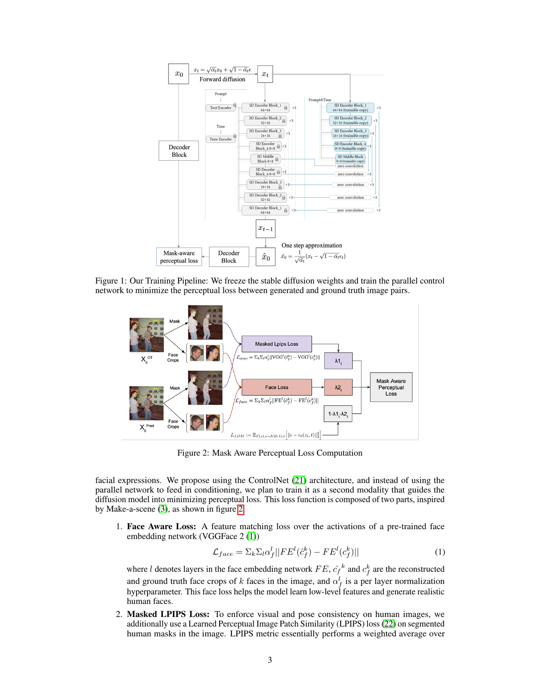
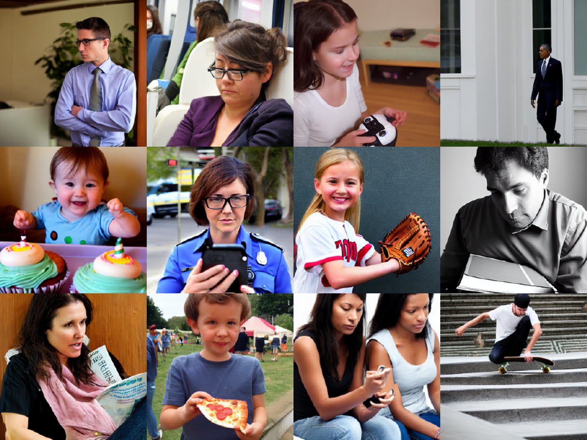

The problem

Stable Diffusion renders scenes well and people badly: extra limbs, unresolved hands, poses that do not close. Conditioning methods such as ControlNet fix this if you hand the model a pose or depth map, but for text-to-image generation you do not have one, which is the entire difficulty. The alternative, classifier guidance, needs a segmentation model retrained on noisy latents, and naively decoding intermediate samples to apply a pixel-space loss means storing roughly a terabyte of computation graph.
What I built

- A mask-aware perceptual loss with two terms: a masked LPIPS loss computed on VGG feature maps restricted to human segmentation masks, and a face term matching VGGFace2 activations on face crops. Combined with the standard LDM objective as a weighted sum.
- Applied the loss in pixel space to the one-step estimate of the clean image rather than DDIM-sampling back to t=0, which is what makes the memory cost tractable. Ground-truth masks and boxes transfer directly to the one-step image because the two are close below moderate noise levels.
- Trained the ControlNet parallel branch on a frozen Stable Diffusion 1.5 backbone, but used it as a loss-guided second modality rather than a conditioning input, so nothing extra is needed at generation time.
- Data: an MS COCO subset with heavy human coverage, 37,470 train and 1,565 validation images, at 512x512, batch size 1, 12 epochs on an RTX 3090.
- Ablated the loss timestep threshold T and both loss weights; best settings were T=100, lambda_1=0.2, lambda_2=0.5.
Masked LDM at T=100 scored 61.72 against 62.32 for Stable Diffusion and 63.95 for the retrained ControlNet baseline. The margin is small and the measurement is weak. The qualitative comparison, where faces and poses are clearly better with no prompt engineering, is the substantive evidence.
What worked
- The one-step approximation is the enabling trick. Below roughly t=200 it is close enough to the clean image that pretrained VGG, VGGFace2 and the ground-truth masks apply directly, which sidesteps retraining any model on noisy inputs.
- The two hyperparameters do different jobs, and separating them mattered: the loss weights control what the model attends to, while T controls smoothness. At T=400 faces and poses improved but outputs went waxy, because one-step predictions at high noise are blurry. T=100 kept low-level detail.
- Retraining the ControlNet branch with no change to the loss produced no visible improvement. That negative control is what justifies attributing the gain to the loss rather than to the extra capacity.
What didn't
- The FID numbers do not support the ranking. Scores were almost constant throughout training and were computed on 500 images where at least 10,000 is standard, so the ordering is within noise. Human inspection is the only honest evidence here, and the report says so.
- Masked LPIPS covers the whole body mask, so hands and fingers, which occupy few pixels, are still frequently wrong. A keypoint-based pose loss is the obvious next step and was not implemented.
- Whole-image metrics like FID, KID and IS score the scene, not the person. A generation can look good to them while the faces are unusable, which means the project never had a metric aligned with the thing it set out to fix.